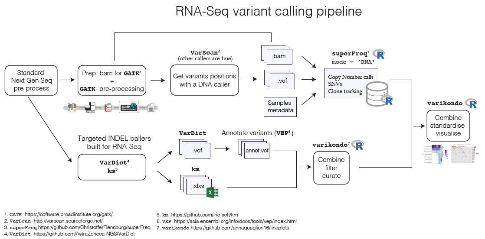

vignettes/rna-seq-pipe.Rmd
rna-seq-pipe.Rmdvarikondo was developed as part of the work done on an RNA-Seq cohort of Leukemia patients, of relatively small sample size (~30 patients), with multiple samples at different time points, sequenced across different batches and tissues. In these type of studies it is often the case that clinicians or biologists need to explore the information for each patient, for a particular set of genes of interest. Time-series lineplots over time as well as heatmaps showing the shifts in variant allele frequency (VAF) and tumour content over time, help with exploring the various genetic results generated from sequencing data.
Calling variants from RNA-Seq samples is increasing in popularity due to the large number of RNA-Seq data produced and benchmarking papers have been published comparing the performance of different callers [@Quinn2013-oh; @Coudray2018-yw; @Lavallee2016-sf]. In the past year several new methods have been developed specifically to improve INDEL detection in RNA-Seq samples [@Audemard2018-vh; @Kohei_Hagiwara_Liang_Ding_Michael_N_Edmonson_Stephen_V_Rice_Scott_Newman_Soheil_Meshinchi_Rhonda_E_Ries_Michael_Rusch_Jinghui_Zhang2019-ny; @Mose2019-vh]. As part of a project done on two Leukemia clinical trials we defined a pipeline to call variants in RNA-Seq and use superFreq to analyse clonal tracking and mutational development across the course of the treatment. We used combined calls from the VarDict [@Lai2016-ws] and km [@Audemard2018-vh] algorithms to define INDEL calls. Below is an overview of the variant calling pipeline and the steps where the varikondo package comes in!

After calling SNVs, CNVs and INDELs with different programs, it is often useful to combine all the results in a standardised way. Usually different programs output variants in different ways using slightly different conventions which makes it challenging to easily combine the results. For example, superFreq returns SNVs, CNVs and clone tracking in Rdata files as well as in csv files; VarDict uses the standard VCF output but with different specification of quality measures compared to, for example, MuTect2 or VarScan2; km outputs INDELs in tab delimited format. This makes it challenging to both create a comprehensive overview of the results for one sample as well as to compare results across callers. Another challenge comes from calling variants independently at different time points for the same patient. Variants might be present before treatment but absent after treatment and when a patient relapses or vice versa. This requires to fill in the missing time points to allow correct visualisations of the changes over time. While superFreq takes this problem into account by keeping any variants found at different time points, other programs like km or VarDict don’t allow that. varikondo takes care of this by allowing joint filtering of variants called from multiple samples within a patient and by imputing defaults values in missing calls at some time points (e.g. 0 if no variants is found).
shiny-clone
The R Shiny app shiny-clone allows exploration of the standardised tidy data frames that be created with varikondo or in some other ways, as fare as the input requirements are met.